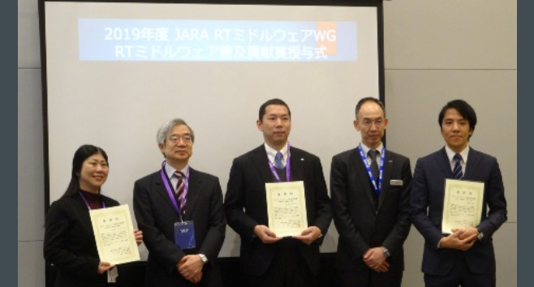
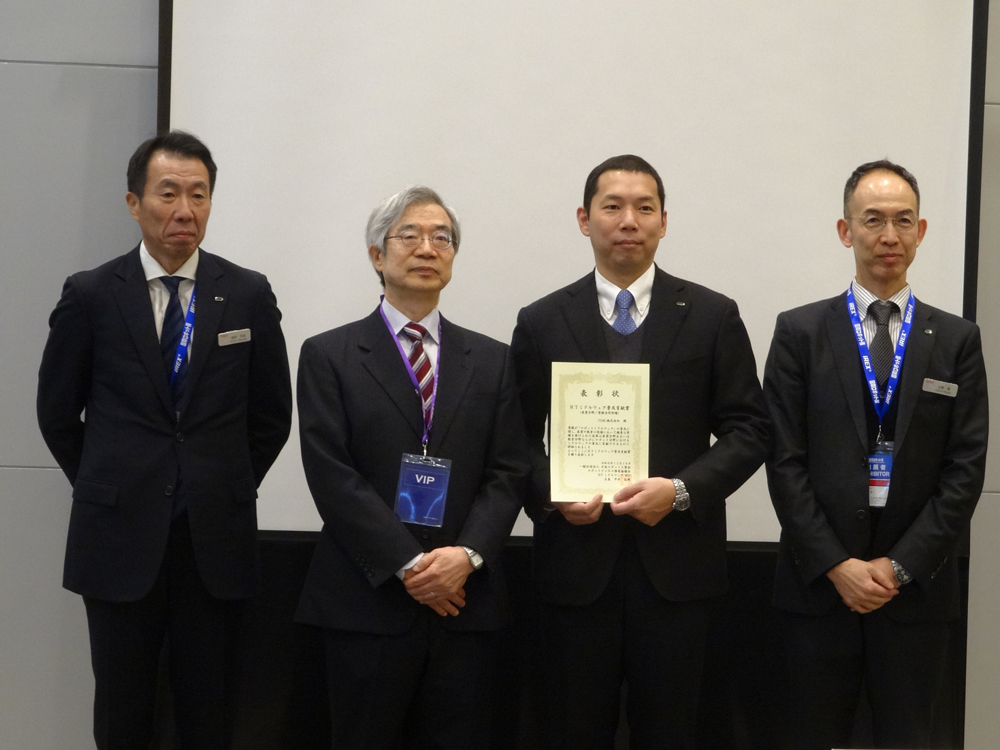

第5回RTミドルウェア普及貢献賞の授賞式が行われました
Dec 18, 2019


ロボットビジネス推進協議会は、RTミドルウェア、RTミドルウェアを用いたロボットシステムの普及に関し、 産業や教育の現場において顕著な実績を挙げている組織あるいは個人、ならびにRTミドルウェアの普及に貢献できる出版や広報活動を 表彰する「RTミドルウェア普及貢献賞」の受賞者を決定し、授賞式を行いました。
- 日時: 2019年12月18日(水)
- 場所: 東京ビックサイト 会議棟8階802
受賞者
（出版・広報分野）出版・広報
近藤 豊 殿
ROSの初期のころからROS関連情報をいち早く発信( https )するとともに、国内での普及 及びコミュニティ活動を積極的に主導し、ROS Japan Users Groupの立ち上げ、ROSConJPの開催にも貢献。 近年では、ROS1の欠点を改善することで産業応用が期待 されるROS2の情報についても、いち早く日本語で発する とともに、その情報を書籍化(ROS2ではじめよう 次世代 ロボットプログラミング)し、実用的なミドルウェアの普 及に大きく貢献した。WEBコンテンツでは、ROS2の使い 方だけではなくその思想や基盤技術にも言及することで、 より深い理解が可能となった。
（産業分野）製品販売実績
株式会社 アールティ 殿
株式会社アールティ、RTミドルウェアやROSを搭載・対応 した研究用・教育用ロボットを多数販売している。NEDO 知能化PJ成果のロボットであるRTミドルウェア対応ロボッ TOROCHI, RIM. ROSICIAL TERaspberry Pi Mouset CRANE+やCRANE RX7等を版場日するとともに、RTMや ROSの活用や普及に多大な貢献をしてきた。RTミドルクエ ア講習会では、ながらく同社製のRaspberryPi Mouseを教 材として利用している。また、RTミドルウェアコンテスト において過去奨励賞を提供したり、ROSCon JPの企画実施 を行うなど、ROSの国内普及に対しても大きな役割を果た してきた。
（産業分野）業務活用実績

THK株式会社 殿
THK株式会社は、カワダロボティクスのNEXTAGEを搭載し たAGVや工場内や建設現場等で利用可能な自律移動ロボッ トの研究開発を行っている。こうした移動ロボットの制御 にRTミドルウェアを用い、NEXTAGEを搭載した工場内モ バイルマニピュレーションシステム(国際ロボット展等で 展示)や、工場などで利用可能な資材運搬システムの開発 を行ってきた。2019年6月に東急建設とともにプレスリ リースした建設現場用搬送ロボットでは、地図作成等を行 うことが難しい環境においても、設置が容易なサインボス トをカメラで認識することで、移動経路を容易に設定・変 更可能な自律移動制御システム「SIGNAS」をRTミドル ウェアを用いて実装するなど、RTミドルウェアの特長を生 かしたロボットシステム開発を行っている。